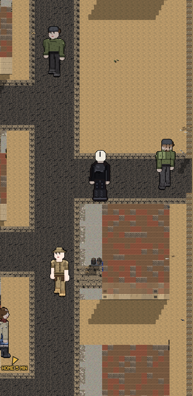
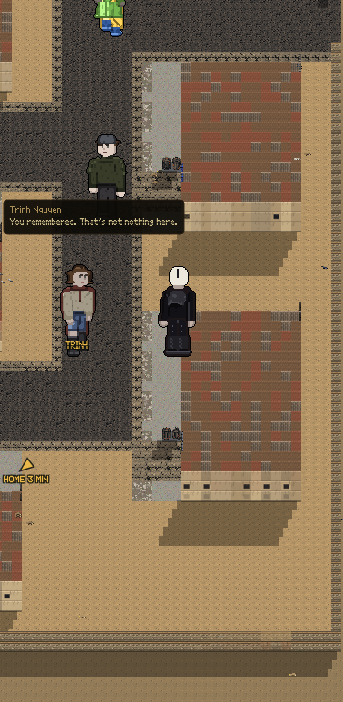
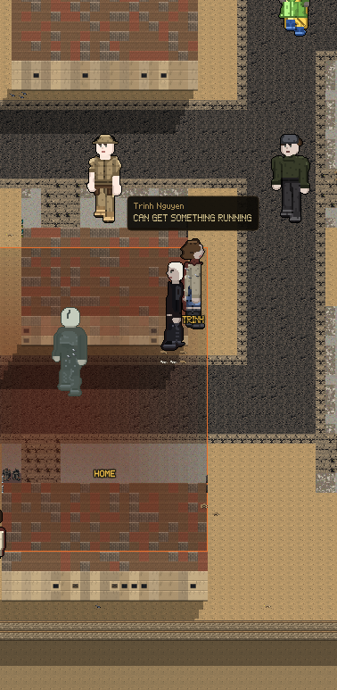

Every picture here is the walked street, from the game's own camera.
Battle Brothers is a grid of little portraits. What a man used to be is one word you hover over. He never says anything.


Nothing was pressed. She talks to you once as you go by. If you keep walking she does not come, and that costs you nothing. And the street talks exactly as much as it did: this is a few lines on top of it, not a town that went quiet so one person could be heard.

"Nine minutes if the arterial is open. Twenty if not." — what she says when she meets you
"KNOWS EVERY ROAD IN THE VALLEY" — what she says once she is with you
Fifteen old jobs were written into this game and every one of them came with a line. None of them had ever been said out loud. The saddest one is the card dealer: "I still cut the deck twice. There is no deck."
| before | now | |
|---|---|---|
| People who will walk with you | 0 | 1 |
| Old jobs said out loud | 0 | 2 |
| How far one press of the pad carries you | 25 | 25 |
| How far away somebody could be and still keep up | 9 | 34 |
| Everything the street says, in one play | 224 | 224 |
Row four is the bug and it is nine days old. One press moves you twenty five steps. The game only let somebody follow you if they were within nine. So the moment you moved, anybody coming with you was gone. That was true for friends and for people chasing you. Row five is the control: the street still says exactly as much as it did.